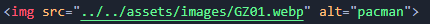
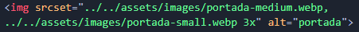

Las imágenes se insertan mediante la etiqueta <img>, la cual tiene los siguientes atributos:
src: Dirección (URL) relativa o absoluta de la imágen que se quiere insertar.
alt: Define el texto alternativo que describe la imagen, texto que los usuarios verán si la URL de la imagen es errónea o la imagen tiene un formato no soportado o si la imagen aún no se ha descargado.
srcset: Una lista de una o más cadenas separadas por comas indicando las posibles fuentes para usar. Cada cadena está compuesta por:
URL de la imagen.
Opcionalmente, espacios en blanco seguidos de:
Un ancho, que es un entero positivo seguido directamente por 'w'. El ancho está dividido por el tamaño de la fuente dada en el atributo sizes para calcular la densidad del píxel.
Densidad del píxel, un positivo decimal seguido directamente de 'x'.
Si no hay descriptores especificados, la fuente es asignada por defecto a 1x.
Imágen normal (src):

Imágen adaptable según el Device pixel ratio (srcset):

Ejemplo:
Imágen normal (src):
Imágen adaptable según el Device pixel ratio (srcset):
Audios <audio>:
Los audios se insertan mediante la etiqueta <audio>, la cual tiene los siguientes atributos:
controls: Si está presente este atributo, el navegador ofrecerá controles para permitir que el usuario controle la reproducción de audio, incluyendo volumen, búsqueda y pausar/reanudar reproducción.
autoplay: si se especifica, el sonido comenzará a reproducirse automáticamente en cuanto sea posible, sin detenerse para terminar de cargar los datos.
Ejemplo:
Videos <video>:
Los videos se insertan mediante la etiqueta <video>, la cual tiene los siguientes atributos:
controls: Si está presente este atributo, el navegador ofrecerá controles para permitir que el usuario controle la reproducción del video, incluyendo volumen, búsqueda y pausar/reanudar reproducción.
autoplay: Si se especifica, el video comenzará a reproducirse automáticamente en cuanto sea posible, sin detenerse para terminar de cargar los datos.
loop: Si se especifica, al alcanzar el final del video, buscaremos automáticamente hasta el principio.
poster: Una URL que indica un marco de póster para mostrar el resultado hasta que el usuario reproduzca o busque. Si este atributo no se especifica, no se muestra nada hasta que el primer cuadro está disponible, entonces se muestra el primer marco como el marco de póster.
Ejemplo:
Iframe <iframe>:
Este elemento representa un contexto de navegación anidado, el cual permite incrustrar otra página HTML en la página actual.
No utilizar mucho debido a que disminuyen el rendimiento de la página.
Ejemplo:
Figura <figure>:
<figure> representa contenido independiente, a menudo con un título. Si bien se relaciona con el flujo principal, su posición es independiente de éste. Por lo general, se trata de una imagen, una ilustración, un diagrama, un fragmento de código, o un esquema al que se hace referencia en el texto principal, pero que se puede mover a otra página o a un apéndice sin que afecte al flujo principal.
Un título puede estar asociado con el elemento <figure> mediante la inserción de un <figcaption> en su interior.
Ejemplo:
HTML: Lenguaje de etiquetas de hipertexto
HTML (Lenguaje de Marcas de Hipertexto, del inglés HyperText Markup Language) es el componente más básico de la Web. Define el significado y la estructura del contenido web. Además de HTML, generalmente se utilizan otras tecnologías para describir la apariencia/presentación de una página web (CSS) o la funcionalidad/comportamiento (JavaScript).